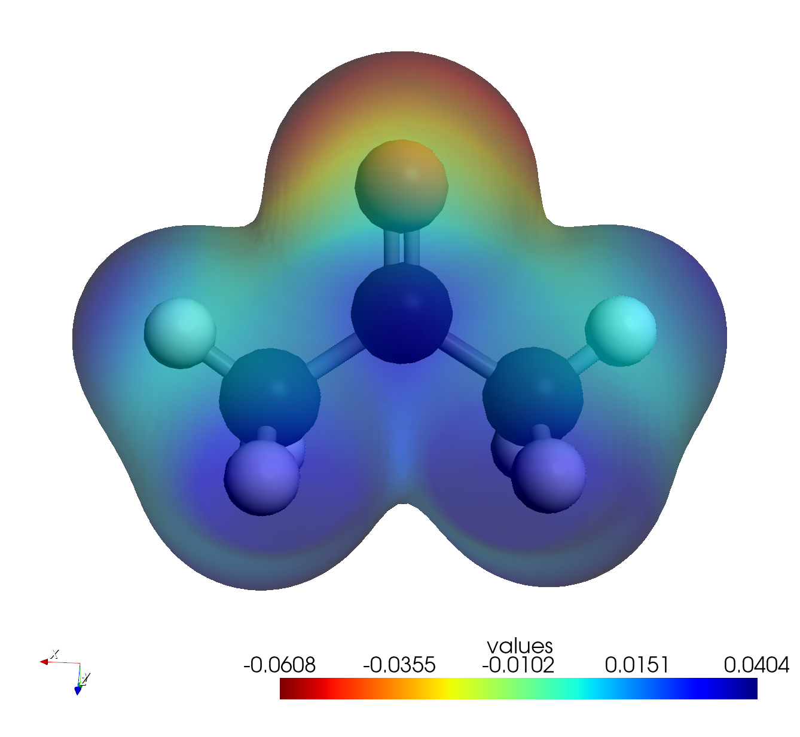

Map the charge distribution (Electrostatic Potential) on the surface of an acetone molecule to identify
the polarity of the carbonyl group and reactive sites.
Instructions
Step 1: Build Molecular Model & Run Calculation
Draw Acetone:
Select the drawing tool.
Draw a 3-carbon chain (C-C-C).
Add an Oxygen atom to the central carbon (click and drag with Oxygen tool).
Create Double Bond: Hover over the C-O bond and press '2'
to convert it to a double bond (or use the "Double Bond" tool).
Ensure the structure is Acetone (CH3COCH3).
Setup Calculation:
Convert 2D to 3D.
Open Extensions > PySCF Calculator.
In the Calculation tab, set Job Type to
Geometry Optimization. (Optimizing the geometry ensures an accurate ESP map).
Set Method to RKS / Functionalb3lyp / Basissto-3g.
Click Run Calculation.
Step 2: Generate ESP Data
Wait for the optimization to complete.
Select Analysis:
In the Post-Calculation Analysis section, locate the Analysis Type list.
Check the box labeled ESP (Electrostatic Potential + Density).
Generate Map:
Click Generate & Visualize Selected.
Note: The plugin will calculate the electron density grid and map the electrostatic
potential onto an isosurface of that density. This process is computationally intensive and
might take longer than orbital generation.
Step 3: Visualize Charge Distribution
The ESP map should load automatically. If not, click the file in Visualization Files.
Adjust Visualization:
Use the Visualization Controls panel.
Adjust the Isovalue slider to change the density surface level (usually
around 0.002 - 0.02 a.u.).
Lower the Opacity slider (e.g., to 0.6) so you can see the molecular
skeleton inside the surface.
Interpret the Map:
Red Areas: Indicate negative potential (high electron density). You should
see this concentrated around the Oxygen atom (lone pairs).
Blue Areas: Indicate positive potential (low electron density). You should
see this around the Hydrogen atoms.
This confirms the polarity of the carbonyl group and predicts that electrophiles will attack
the Oxygen, while nucleophiles attack the Carbonyl Carbon.
Note: The unit of the Electrostatic Potential is Hartree.

Notes
Basis Set: This tutorial uses STO-3G for speed.
Troubleshooting: If you make a mistake, it is recommended to select
File > New and restart from the beginning rather than trying to fix it manually.